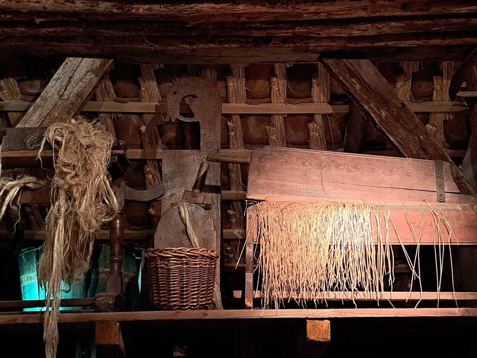

5. Tools Used in the Process from Flax to Yarn

Making linen from flax was a long and arduous process.
First, the soil was prepared and the flax seeds were sown.
About 100 days later, the flax was ready to be harvested and dried, just like in the little flax shed.
Next, the flaxseed head had to be separated from the stem; this process is called "repelen."
Sometimes the stalks were left lying in the field or submerged for a while to rot.
Rotting means that the bark separates from the fiber because the adhesive substance, pectin, dissolves.
The decomposition process took 1 to 2 weeks, gave off a foul odor, and polluted the water.
After that, the flax was dried again.
A few more steps were needed to spin the flax into yarn:
- Breaking: The bark was broken into pieces.
- Zwingelen: The last bits of bark were removed.
- Sizing: The fibers were laid parallel to one another, and any lint was removed.
Many of the devices that were used for this purpose can be seen on the shelf in the upper right corner, just below the attic.
Next came spinning: the fibers were sometimes tied to a spinning wheel beforehand, or pulled directly from the bundle and spun into thread.
The yarn was wound onto bobbins, ready for the loom.
Spinning was usually done by women and children.
Around 1300, the spinning wheel replaced the spindle and spindle whorls.
This allowed the farmer's wife to make twine more quickly and more evenly.
In the following story, we’ll tell you a bit about the cows that lived in a deep-litter barn at Los Hoes during the winter.